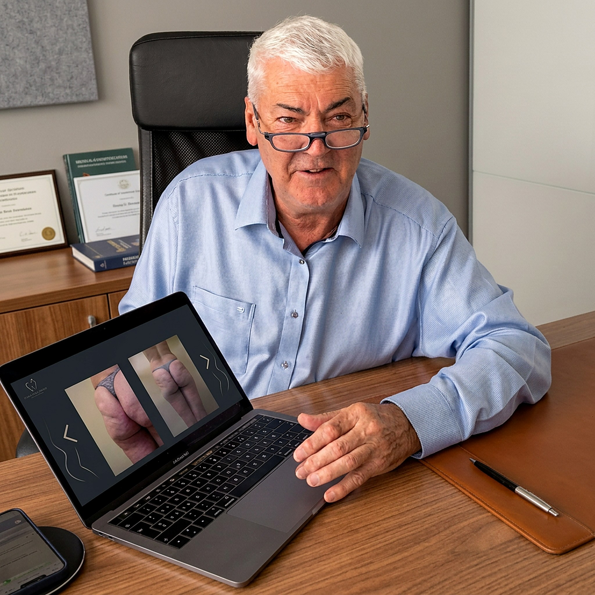

Après plus de 27 ans de pratique de la liposculpture, plus de 90 % de mes interventions concernent aujourd'hui le lipœdème, grâce à la canule que j'ai mise au point.
Chaque patiente est reçue personnellement, avec le temps nécessaire pour comprendre sa situation et lui expliquer ma technique.

Le diagnostic de lipœdème est excessivement simple à poser d'un point de vue clinique pour quelqu'un connaissant le sujet, sans examens techniques complémentaires sophistiqués. Vous pouvez vous-même faire le diagnostic avec deux ou trois explications judicieuses.
La canule Houyoux de 2,5 mm de diamètre, avec des trous de 1 mm, animée par le Lipomatic ou l'Evamatic de chez Euromi, permet d'éliminer cette graisse tout en respectant au maximum la vascularisation et la trame conjonctive, indispensable à la bonne rétraction cutanée.
Mise au point par le Dr Houyoux et utilisée depuis octobre 2014.
La vascularisation et la trame conjonctive sont préservées au maximum.
Après les douleurs post-opératoires normales (de quelques jours à une quinzaine de jours), la douleur typique du lipœdème disparaît dans la zone traitée.


La vidéo ci-dessous (1h21) reprend la partie théorique de mes consultations. Nous vous rencontrerons bien volontiers après que vous en ayez pris connaissance.
De face, de profil et de dos, pieds compris, avec votre poids, votre taille et les zones à traiter. Vous recevez un devis très précis.
Il vous voit personnellement pour vous donner son avis et répondre à vos questions. Rendez-vous auprès d'Eva au 079 596 63 04.
Avant de me rencontrer en personne, je vous demande de regarder cette vidéo : elle fait partie de la consultation. Afin de donner un maximum d'informations sur la liposculpture en général et le lipœdème en particulier, j'ai réalisé une vidéo de la partie théorique de mes consultations. Elle dure 1h21 et répondra à la majorité de vos questions, comme si vous assistiez vous-même à la consultation.
Vidéo indispensable à la bonne compréhension de ma technique · 1h21
Nous sommes là pour vous conseiller : nos informations vous guideront vers la solution la plus adaptée à votre budget et à vos besoins. Envoyez vos photos (face, profil, dos), votre poids, votre taille et les zones à traiter pour recevoir un devis précis.
Demander un devisAppeler Eva : 079 596 63 04